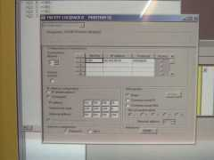

Click on the picture on the right for a larger photo.
Tested March 2004.
RTU version checked out OK with 4800, 9600 and 19200 baud, and several parity/stop permutations. Other possible (slower) speeds were not tested.
I couldn't get the ascii version to work. The modicon PLC reported character errors, which means it was not reading the individual characters in the frame succesfully, even though all parity/stop bits/data bits/baud all seemed to be OK. Strange... Does anybody have any bright ideas?
TCP version also checked out OK, using the same CPU, but now with a TSX ETY 110WS ethernet communication module, and using the default port (502). However, this module seemed to ignore the slave address, and responded to all requests. This means that the value in the 'node address table' was completely ignored by the modicon PLC.
Aditionally, I never got to figure out what the Net.Station configuration was for. I just inserted '1.100', and things seemed to work...
The dialog box on the left (click to enlarge) shows the configuration of the PLC as made in FIXME...
Mario de Sousa
msousa at fe.up.pt$Date: 2004/03/10 08:04:39 $
{kind=link}